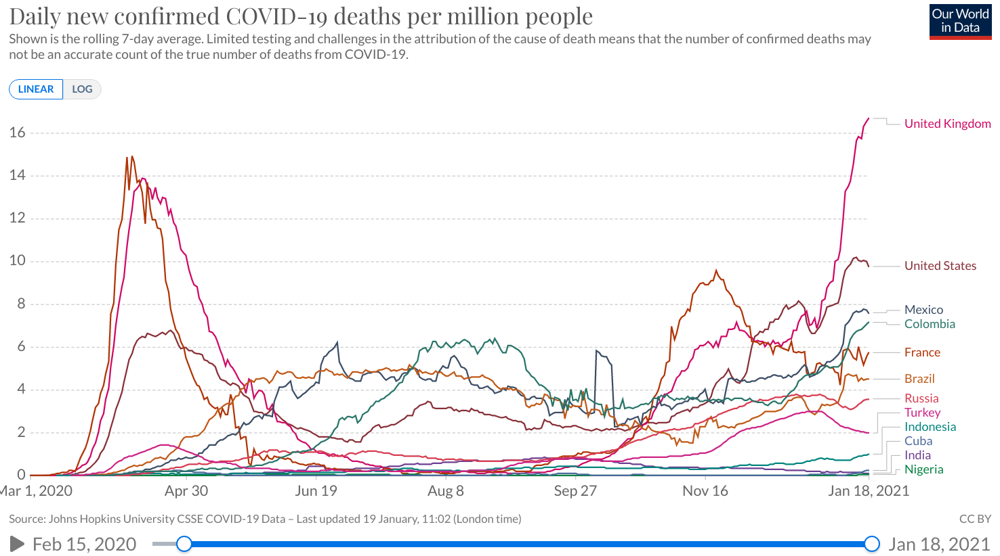

Archivo: 2020
5. Posible introducción de nuevos paradigmas
4.junio.2021La tensión global está en sus máximos históricos desde el fin de la llamada "segunda guerra mundial" pero vivimos con la "espada de Damocles" nuclear sobre nuestras cabezas desde hace un par de generaciones. ¿Qué cambia con el incremento de la tensión? En realidad el estallido de una gran guerra nuclear mundial puede darse en cualquier momento y bajo cualquier pretexto. Esto es algo que asumen todas las teorías de estrategia nuclear. ¿Cuál es la diferencia entre tener bárbaros frente a las puertas o tenerlos a un continente de distancia si enfrentarlos implica una confrontación nuclear global?
Me he tardado en escribir algo sobre todo porque no quiero ser repetitivo, pero creo que los acontecimientos de estos últimos meses han ido aclarando algunas cosas y se vuelve necesario reiterar algunas conclusiones que ya había ofrecido.
Esto ya es muy poco relevante pero queda patente que la relativa contención militar de Trump no significó un cambio significativo en lo que respecta a las posiciones militares y estratégicas del imperio en la era Obama sino simplemente un mantenimiento del status quo. Los continuos incrementos al presupuesto del Pentágono y la demonización racista de China de la era Trump se concatenan sin esfuerzo con los nuevos incrementos al presupuesto y la beligerancia antirusa de la era Biden. Sin embargo, Trump no ha perdido su base. Se han encerrado en una crisálida y saldrán al cabo de un tiempo transformados, líder y base, en una entelequia "de nuevo tipo". No me sorprendería si la nueva estrategia política del trumpismo resulta ser abiertamente golpista pues esa es de hecho la única vía de regreso al poder para Trump, pero tendría que ser una estrategia genuinamente populista. Las élites no solo no lo apoyarán nunca más sino que harán todo lo posible por destruirlo políticamente, pero las masas mobilizadas pueden hacer realidad cualquier cosa. Es muy extraño, Trump avanzó más de lo que contuvo la agenda del imperio, sobre todo en lo que respecta a la actualización del arsenal nuclear, el desarrollo de misiles hipersónicos y la creación de las fuerzas espaciales. ¿Porqué entonces el nivel de ostracismo al que es sometido? A mi me parece que ni la pretendida disputa entre nacionalistas y globalistas ni el modelo de "guerra cultural" bastan para explicar esta situación. Pero ya no me interesa realmente explicarla. Ya no me interesa la política interna de Estados Unidos ni saber porque podría importarle a sus élites el que sus esclavxs sean evangelistas o queers cuando todxs son al final imperialistas y aplaudidorxs del capitalismo y la plutocracia. Lo que sí es interesante dentro de Estados Unidos es el nivel de rechazo popular al apartheid sionista y de apoyo al pueblo palestino que está llegando a niveles nunca vistos y que puede tener repercusiones en términos de política exterior, aunque por ahora el apoyo político, económico y militar de "Estados Unidos" al ente sionista se mantiene.
La victoria del pueblo palestino sobre la ocupación sionista con la operación "espada de Al-Quds" ha sido una demostración más de la inviabilidad de los viejos paradigmas de dominación militar que siguen siendo la base de la estrategia imperialista anglo-israelí. La resistencia palestina había utilizado apenas una fracción de los misiles y drones que ha adquirido o desarrollado cuando la entidad sionista aceptó el alto al fuego, quedando varias armas aún ocultas. Aunque la liberación de Palestina está aún lejos en el horizonte, el balance de poder ya ha cambiado a favor del pueblo palestino y del Eje de la Resistencia, que ha llegado a nuevas cotas de complementariedad estratégica, y con ello la liberación se torna inevitabilidad histórica. La victoria en esta primera batalla de muchas por venir, así como la heróica lucha prolongada que está dando el pueblo de Yemen, también demuestran la necesidad de trascender el limitado enfoque geopolítico materialista para abarcar de manera más amplia la subjetividad humana, el poder de la fe y de las ideas. La calidad humana de estos pueblos y de sus aliados, como el pueblo iraní, es infinitamente mayor a la calidad de los remedos de ser humano que envían desde occidente a desperdigar fasad en Asia Occidental. La sangre de los mártires no se vierte en vano y el imperialismo nunca producirá un solo mártir para su causa.
Lo que Rusia demostró en abril fue su capacidad de desplegar más ejércitos y más armas en mucho menos tiempo de lo que podría hacer la OTAN si de lo que se trata es de combatir frente a sus fronteras. Pero esto es bien sabido desde hace décadas, no debería ser un nuevo descubrimiento para nadie. En caso de que estallase la gran guerra, Rusia frenaría a la OTAN delante de sus fronteras, con un muro de tanques y cohetería sobre el territorio de una Ucrania y una Polonia vencidas y tomadas en cuestión de una semana o dos. "Estados Unidos" ha llegado a la línea roja de Moscú pero es una línea roja trazada desde la era soviética. Lo único que consigue "Estados Unidos" con sus constantes provocaciones es corroborar que dista de las capacidades para conseguir sus objetivos. Nunca ha habido posibilidad para la OTAN de ganar contra Rusia sin recurrir a las armas nucleares, todo lo demás es postureo. Poco después de desistir en el envío de una importante flota al mar negro, "Estados Unidos" pasó inmediatamente a intentar asesinar al presidente Lukashenko. Queda patente que no se trata realmente de una distención o una reducción de las hostilidades sino de continuar buscando la posición ventajosa desde la que lanzar el first strike que sigue siendo la base de la estrategia gringa. Rusia, por su parte, continúa preparándose para enfrentar un mayor nivel de hostilidad tanto en lo militar como en lo financiero y en el proceso está creando las condiciones para el nacimiento del "mundo multipolar".
En México hay muchos procesos "atorados". Y es obvio que nadie se está tomando la molestia de desatorarlos, todo mundo tiene la atención puesta sobre las elecciones desde hace algunos meses. No espero ninguna sorpresa, la coalición obradorista ganará probablemente con un márgen incluso mayor (por algunos puntos porcentuales) que con el que llegó al gobierno. Podría perder algún estado, lo que no es muy significativo. El que los partidos del viejo régimen mantengan algunos feudos y el que se dediquen a robar lo más posible y de la manera más mezquina de esos feudos sólo abona a la inevitable disolución de ese viejo régimen y, mientras tanto, le da "gobernabilidad" al país pues divide a la "oposición" (principal factor de desestabilización) entre quienes tienen algo que perder y quienes se quedan sin "hueso". Tras la elección, el presidente debería interpretar que tiene un mandato popular y la mayoría que controla las cámaras debería legislar como corresponde a una mayoría. Pero lo más probable es que eso no suceda y que las cosas sigan atoradas pues todavía hay mucho miedo a tocar intereses de la élite. Quizás lo único que podría mover a la política mexicana en esa dirección antes del 2024 es que Perú, Colombia, Chile y Brasil cambien de rumbo, lo que es no solo posible sino probable en cada uno de los casos, y que se vuelva a hablar de cosas como "integración lationamericana". La lucha de clases a nivel regional durante las próximas décadas será cruenta pero sin el apoyo militar del imperio a estados vasallos nuestros parásitos locales son realmente débiles. No son las condiciones que dieron lugar a las dictaduras de los setentas, las condiciones actuales favorecen al proletariado sobre la burguesía. La conquista de la soberanía a nivel regional a mediano plazo es viable sobre la base de la integración y la cooperación con Rusia-China y los no-alineados y este proceso será muchísimo menos difícil si partimos sobre la base de una amplia mayoría de estados "soberanistas" que se podría constituir dentro de los los próximos pocos años.
El último tema que quiero abordar es la cuestión OVNI. Este mes debe publicarse un nuevo reporte del Pentágono al Congreso de "Estados Unidos" explicando que es lo que ha estado haciendo el ejército al respecto durante las últimas décadas. Hay que tener en cuenta algunas cosas. El gobierno gringo ha estado investigando el "fenómeno" desde por lo menos fines de los cuarentas del siglo pasado. Hacia mediados de los cincuentas, en plena guerra fría y bajo el nombre de proyectos como "Sign" y "Grudge", las prioridades para el ejército gringo eran básicamente: a) Desarrollar sistemas suficientemente fiables para descartar errores y falsos positivos (cuestión de la mayor importancia, pues no saber distinguir entre tecnología soviética y OVNIs podía detonar un intercambio nuclear accidental), b) Determinar cuestiones básicas respecto a sus movimientos, trayectorias, si puede predecirse en donde aparecerán, si puede utilizarse el "fenómeno" en el contexto de operaciones psicológicas, si se puede controlar, si es algún tipo de tecnología y si se puede copiar, etc., y c) Determinar el nivel de conocimiento sobre el fenómeno de la URSS. Después vino un proyecto de desinformación llamado "Blue Book" que pretendió zanjar la cuestión afirmando que se había determinado que ningún caso de OVNI estudiado hasta 1969 constituía una posible amenza a la seguridad nacional de "Estados Unidos". A partir de "Blue Book" sigue un periodo en el que los "avistamientos" son sistemáticamente negados, desacreditados y marginalizados. Recientemente, desde hace unos cinco años, una serie de videos filtrados (por supuestos exagentes de inteligencia del imperio que posiblemente continúan siguiendo instrucciones de las agencias) han sido reconocidos como reales por el ejército y eso ha resucitado el tema y generado este nuevo reporte.
También hay que tener en cuenta que los OVNIs son un fenómeno mundial. El ejército mexicano ya publicaba oficialmente sus persecuciones de OVNIs en el 2004. Ejércitos de otros países, como el chileno, también han publicado casos. Los ejércitos rusos y chinos conviven con el "fenómeno" tanto como los estadounidenses.
En resumen, lo que sabemos que ha sucedido desde 1969 a la fecha incluye: 1) El hecho de que las investigaciones continuaron después de "Blue Book". 2) Varias olas de desclasificación de archivos soviéticos abarcando desde las épocas del imperio ruso hasta la desintegración de la URSS, incluyendo cosas tales como el derribo accidental de un OVNI (incidente de Sverdlovsk en 1968) y encuentros submarinos (que tornan ridículo el mismo término OVNI, pero lo seguiré usando aquí). 3) Casos tanto gringos como soviéticos/rusos en donde OVNIs aparecen sobre silos nucleares y desactivan y dejan inutilizables los misiles, o bien los ponen en operación de manera que se requiere desactivar la secuencia de lanzamiento manualmente. 4) Casos como los que conocemos por los últimos videos virales en donde vemos OVNIs acercándose a portaaviones en pleno ejercicio militar y OVNIs demostrando velocidades y capacidad de maniobra muy superior a la de toda la tecnología humana conocida. Por cierto que los casos a los que me refiero en 3 y 4 no pueden sino ser considerados "peligros a la seguridad nacional" de cualquier estado. 5) El flujo constante y sistemático de informaciones en torno a una narrativa sobre OVNIs y extraterrestres a través de los canales de propaganda del imperio, como Disney (que recientemente engulló a 21st Century Fox, productora de mucho de este tipo de contenido) y el History Channel de la corporación Hearst. Considerando estos factores podemos determinar el grado de tomadura de pelo o hacia que objetivo pueda estar encaminado este reporte en tanto que operación psciológica, evidentemente lo último que podríamos esperar es que se "revelara la verdad" o alguna cosa por el estilo. Tengo más que decir sobre el tema pero esperaré a la publicación del reporte para continuar.
4. Cambios en la tensión global
31.marzo.2021Desde hace tiempo tenía la intención de escribir algún análisis sobre los conflictos militares en curso y sus impactos geopolíticos y geoestratégicos. Sobre todo me interesaba responder a la pregunta de si estos conflictos resultan del nacimiento del mundo multipolar y si están afectando el balance de fuerzas en el mundo. Pero ahora veo con mayor claridad que lo que me toca hacer a mi aquí es por un lado curaduría y por otro metaanálisis. He creado una nueva sección en donde compartiré una selección de artículos recientes sobre temas de "historia contemporánea", que entiendo como historia del llamado siglo veinte en adelante. Son los mejores y más importantes textos que he leído, con la información allí disponible es suficiente para tener una visión relativamente clara del mundo actual, del contexto geopolítico global y de los procesos en curso. En cuanto pueda haré una selección de textos más largos y libros.
Me parece que actualmente hay tres tipos de conflictos:
En primer lugar están los conflictos creados, planeados, detonados en la era de la hegemonía unipolar gringa como los de Afghanistán, Irak, Siria o Libia. Dentro de esta categoría también hay que incluir las revoluciones de colores y los regímenes que han engedrado en donde han tenido éxito, como en Ucrania y Brasil. Y también hay que incluir a los grupos separatistas y mercenarios no exitosos como terroristas takfiris en Indonesia y en el Turquestán chino, los grupos separatistas en Hong Kong y en Tailandia, los mercenarios entrenados en Colombia para invadir Venezuela, etc. Con el establishment de vuelta en el corazón del imperio, todos estos conflictos se están calentando.
En segundo lugar están los conflictos que resultan de tensiones locales, tensiones que pueden ser étnicas, tribales, religiosas o económicas. El golpe en Birmania, la guerra en Sahara Occidental, la guerra en Tigray y los conflictos en Congo, Nigeria y Mozambique son buenos ejemplos. Estos conflictos son mucho más impredecibles y pueden llegar a tener impactos importantes para la estabilidad regional. Impactos como el deshabastecimiento de agua en grandes de regiones de Egipto, Sudán o Etiopía dependiendo de quien se haga con el control de tramos estratégicos del Nilo. Esto puede afectar la estabilidad global mucho más que cosas como el bloqueo "accidental" del canal de Suez hace unos días. No obstante ninguno de estos conflictos tiene el peso suficiente para trastocar la estabilidad estratégica global (que por cierto la estabilidad estratégica ya no depende meramente de cuestiones de paridad nuclear sino que es multidimensional). También hay que considerar dentro de esta categoría a los conflictos civiles como las protestas campesinas en India.
En tercer lugar están los conflictos en los que las potencias emergentes del nuevo mundo multipolar están posicionándose y fortaleciéndose.
Turquía ha logrado posicionarse como un gran poder regional con la última guerra en Nagorno-Karabaj, el tira-y-afloja con la OTAN, los pleitos con Grecia, Chipre y Francia, y el envío de mercenarios a Siria y Libia. El poder de Turquía le da la influencia necesaria para desarrollar relaciones con Rusia (incluyendo el acceso a algunas de las mejores armas rusas de exportación) y Venezuela al mismo tiempo que le permite influir sobre todo el mundo musulmán y árabe. La diplomacia de Asia Occidental ya no se puede entender sin Turquía. El balance entre Irán, Israel y Arabia Saudita ahora incluye necesariamente a Turquía. Es la potencia que más se ha fortalecido, aunque cabe destacar que Irán y Corea popular no se han debilitado. Por otro lado el mayor perdedor de los últimos años ha sido el reino de la casa de Saúd que se está viendo superado en combate por los hutíes en Yemen.
Países como Pakistán y Mongolia están también en una senda acelerada al crecimiento económico y un mayor peso geopolítico a través de su asociación con China en el proyecto del Cinturón y la Ruta. El posicionamiento y el fortalecimiento de cara al nuevo mundo no necesariamente pasa por hacer la guerra. Al derrotar el intento de revolución de color y al consolidar su alianza con Rusia, Bielorrusia se ha fortalecido. Al impedir la llegada de una liberal a la presidencia, Birmania ha cavado (para bien o para mal) una trinchera de independencia nacional. Estos procesos no-militares tienen un gran potencial de modificar la estabilidad estatégica global pero son procesos muy lentos.
Asumiendo que la economía de "Estados Unidos" mantenga sus tendencias durante otra década, China la superará como la economía mas grande el mundo hacia el 2028. Pero asumir eso es poco realista, sería mucho más sensato asumir que la decadencia de "Estados Unidos" se acelerará. Los próximos cinco años serán decisivos. Es el periodo más crítico en la historia de la humanidad; el resto del siglo se decide en la próxima década.
Reitero una vez más lo que ya he mencionado muchas veces: La única opción para "Estados Unidos" es la guerra. La gran guerra. Ya no habrá pequeñas guerras proxy. Ya hay un poder contrahegemónico lo suficientemente fuerte para sostener a un pequeño estado bajo ataque imperialista, como el escenario sirio ha demostrado. Lo único que queda es escalar la guerra en Ucrania, detonar la guerra entre Irán e Israel, inundar Xinjiang de jihadistas, invadir Venezuela, detonar la guerra en el mar de sur de China e involucrar a Corea popular. Cualquiera de estas cosas por si sola no puede sino resultar en un gran fracaso para "Estados Unidos", contribuyendo a acelerar su colapso. Únicamente combatiendo simultáneamente en todos estos frentes "Estados Unidos" podría tener una oportunidad real de derrotar a los poderes contrahegemónicos y esclavizarnos a todxs. Ya estamos suficientemente cerca de estos eventos para que el detonante no sea nada que vaya a suceder sino cuestiones como el clima o la cantidad de reservas de gasolina en tales o cuales bases. Puede ser cuestión de semanas.
3. ¿Ni guerra civil ni revolución?
28.febrero.2021Con la segunda absolución de Trump el panorama político de "Estados Unidos" ha quedado un poco más claro. Se ha evidenciado que el partido demócrata no tiene la fuerza política-electoral para cancelar a Trump. Pero también la crisis terminal del partido republicano: más de la mitad de lxs votantes estaría dispuesta a seguir a Trump con su propio partido (aunque esta fractura entre el bando "conservador" significaría el predominio absoluto del partido demócrata).
Trump nunca ha sido ni de lejos un insurreccionalista y ahora, libre de la amenaza de la cancelación inminente de sus derechos políticos, tiene aún menos razones para promover una vía insurreccionalista que aquel 6 de enero. Al contrario, se concentrará en hacer campaña para 2024 y quizás creará sus propios medios de televisión y digitales. Ignoro cuales sean las razones que llevan a Trump a pensar que podría volver a ganar. Yo todavía no he decidido si pensar en Trump como una forma sofisticada de disidencia controlada (bien podría serlo sin ser consciente de su papel) o como un verdadero outsider. Pero la principal consecuencia de la supervivencia política de Trump (que es tan obvia que no puede sino haber sido el verdadero objetivo del partido demócrata al promover este segundo juicio) será una pacificación del trumpismo durante los próximos cuatro años.
Entre los sectores radicales tanto de "izquierda" como de "derecha" la gente parece tener las cosas más claras: Bajo el régimen de Biden todos los grupos contrarios al establishment serán perseguidos como terroristas domésticos y cancelados si aún no lo estaban, como ya ha empezado a suceder. También han habido varias purgas en el ejército durante los últimos meses. Esto ha llevado a un acercamiento inédito entre grupos antagónicos del antiestablishment como antifas e infowarriors que a veces me parece muy prometedor. En realidad ni los Boogaloo Bois son tan fascistas ni lxs antifas son tan antifascistas y la cultura política de "Estados Unidos" basada en el federalismo y la autonomía de los estados frente al gobierno federal debería permitir la unión e incluso amistad entre estos aparentes opuestos. Si para algo sirve el federalismo es para que comunidades con creencias y valores distintos puedan vivir en paz. Pero he estado empapándome del ánimo de la gente y, siendo realistas, no veo posible cuando menos en el corto y mediano plazo que los gringos superen las divisiones que les impiden identificar a la clase capitalista como el verdadero enemigo. Al menos los grupos radicales de derecha han dejado de expresar un apoyo incondicional a la policía y otros cuerpos represivos del estado. Pero el pueblo gringo está todavía muy lejos de tomar consciencia de cosas tan obvias como que el capitalismo es una economía controlada por quienes tienen capital y no "mercados libres".
Pienso que quienes han vuelto a tomar las riendas en "Estados Unidos" no permitirán que suceda otra "situación Trump" bajo ninguna circunstancia, situación que por mera demografía solo podría darse dentro de la próxima década. Tampoco van a atizar el conflicto cultural al grado de provocar una guerra civil, pero mantendrán el espectro de la guerra civil constantemente presente para inducir el miedo y la conformidad al status quo.
Siempre me ha parecido fantasiosa la idea de que los gringos tengan uno de sus famosos "despertares". Pero al mismo tiempo constantemente me asalta la duda respecto a como reaccionarán el día que descubran que toda la historia de "Estados Unidos" que conocen está falseada. ¿Sucederá algo así en primer lugar? ¿O acaso ya ha sucedido? Todos esos departamentos académicos sobre teorías raciales y de género que han cobrado popularidad en las últimas décadas y que Trump quería clausurar representan hasta cierto punto una visión crítica sobre "Estados Unidos" a nivel civilización. ¿Acaso eso será a lo más que llegarán quienes opten por ser críticxs? ¿Será la academia suficiente como válvula de escape para la generación zoomer?
Siento que incluso de darse un Great Awakening las posibilidades de que eso lleve a una refundación o un fin del capitalismo en "Estados Unidos" son prácticamente nulas. Todos los sistemas jurídicos, culturales y psicológicos desplegados por esta entelequia que llamamos "Estados Unidos" para controlar a su población siguen siendo muy funcionales. La cosa es que hay otras civilizaciones y otros sistemas.
La civilización-estado rusa tiene un camino bastante obvio hacia el futuro. Lxs rusxs se la piensan demasiado pero al final entienden su destino. El proyecto civilizatorio cristiano ortodoxo, el proyecto civilizatorio islámico y el proyecto civilizatorio ilustrado-socialista son perfectamente compatibles y complementarios bajo la guía de un estado socialista ruso. En el caso de la civilización-estado china las cosas son todavía más claras. En dos o tres planes quinquenales China habrá dejado atrás para siempre a "Estados Unidos" bajo todas la métricas posibles y estará redefiniendo el significado de socialismo y comunismo globalmente tanto en las discusiones teóricas de lxs intelectuales como en la vida cotidiana de la gente práctica. La mayoría de lxs analistas que saben de lo que hablan sostienen que "Estados Unidos" ya ha perdido en el terreno económico. Prácticamente ya solo queda la opción militar.
No queda duda de que el régimen Biden tiene intención de incendiar Asia Occidental. Eso ha quedado claro desde su elección de oficiales. Y tanto más claro a partir del primer bombardeo en Siria hace un par de días, un primer movimiento en una nueva fase de la guerra imperialista en la región. También ha quedado claro que Biden asumirá como suya la "estrategia" anti-China de Trump aunque no haya sido exitosa hasta ahora, es decir que la clase capitalista gringa está dispuesta a "aceptar más riesgo", para ponerlo en jerigonza burguesa. En lo alto de la piramide parece ya haberse asumido la "inevitabilidad" de la guerra contra China. Yo no creo que esta guerra se de pero si llega a darse no me cabe ninguna duda de la victoria china (léase ruso-china), incluso si es una guerra nuclear.
Todo lo que ha sucedido hasta ahora en 2021 es asquerosamente convencional. Los escenarios más probables y más cantados se están cumpliendo. No hay grandes novedades. Ni las habrá, creo yo. Es decir, falta lo que falta pero está muy cantado también. Occidente usará la crisis económica de la Covid para impulsar una reestructuración de su sistema laboral y financiero durante los próximos años. Cosas como Q se convertiran en fenómenos globales. La lucha, entre clases y entre naciones, por recursos como el litio y el agua. La evolución del precio del petróleo y del bitcoin (al alza en ambos casos). La creación de monedas digitales en varios países. En los últimos años dediqué, justificadamente creo yo, bastante atención al fenómeno Trump. Fue lo más interesante que ha sucedido en la asquerosa "política" liberal-occidental desde hace varias décadas. Ya no sucede nada interesante en occidente y por lo tanto esta será mi última entrada en donde me enfoco en la política interna de "Estados Unidos", a menos que suceda algo realmente extraordinario.
A nivel personal estoy dedicando prácticamente todo el tiempo que estoy despierto a aprender a usar Blender para modelar y animar cosas por lo que las actualizaciones en este portal serán mínimas durante los próximos meses. Pero no lo dejaré.
2. Inicia el 2021.
19.enero.2021Parece que he estado básicamente en lo correcto hasta ahora en mi lectura respecto a "Estados Unidos" y por lo mismo no me parecía que tuviera mucho que añadir. Pero a un día de la instauración del nuevo régimen creo que vale la pena expresar algunas cosas.
Un último comentario sobre Trump como presidente:
Llegó a la presidencia porque no era un político, salió de la presidencia porque no era un político. El establishment le aplicó una jugada frente a la que no tuvo respuesta y finalmente perdió. Debió prever la posibilidad de la escenificación de una bandera falsa como la que se dio el 6 de enero en el Capitolio. En ese momento todavía no era un jaque mate. El gran error de Trump recayó en no saber actuar como un verdadero dirigente de masas, una consecuencia inevitable de no ser un verdadero populista y de ser de clase burguesa. Debió aprender de su "amigo" López Obrador. La toma de Reforma fue una decisión política acertada en su momento (para su movimiento), tan acertada que hoy López Obrador es presidente. Hay resultados políticos que solo se pueden lograr trascendiendo la institucionalidad, cosa que Trump no estuvo dispuesto a hacer. Entiendo que para la psique gringa el "atentar" contra un lugar de culto como lo es el Capitolio es un gran sacrilegio. Pero Trump podría haber enviado una única instrucción a sus seguidorxs ese 6 de enero: "Don't move". Quedarse ahí, ocupar pacíficamente las cuatro cuadras que rodean el Capitolio con un millón de trumpistas. Simplemente con las trocas de la toda la horda habría bastado para bloquear las calles con barricadas inamovibles en donde además habrían podido dormir con aire acondicionado. Había otro camino, pero no lo tomó.
El futuro inmediato:
En vez de eso la inauguración de Biden tendrá de fondo a Washington, D.C. bajo ley marcial y veremos la aparición de milicias armadas de varias diferentes facciones: Fascistas aceleracionistas que operan con fachada de izquierda como los boogaloo bois, grupos mercenarios coordinados con las agencias de inteligencia, seguidorxs de Qanon con cuadros psicóticos y anarquistas e insurreccionistas tanto de "izquierda" como de "derecha". ¿Lo que menos habrá? Trumpistas comunes y corrientes.
El establishment va por todo, está fomentando una confrontación a fin de obtener los pretextos necesarios para extender la ley marcial. ¿Pero cómo actuarán las tropas? Lxs soldados que custodian el Capitolio en este momento supuestamente han sido seleccionadxs con base en su grado de no-trumpismo. Pero basta saber mentir para saltarse ese proceso de selección. Como señala un asustado legislador demócrata: "probablemente no haya más del 25 por ciento de las personas que están allí protegiéndonos que votaron por Biden".
Tenemos todos los ingredientes de un gigantesco desmadre, solo queda disfrutar el espectáculo.
En este punto ya es más que irrelevante pero no voy a dejar de mencionar que, aplicando los criterios que "Estados Unidos" usa para juzgar como fraudulentas las elecciones en cualquier región del mundo, la elección de 2020 fue un fraude absoluto y que han quedado muchas evidencias de ello.
Mientras tanto en México:
La política nacional mexicana tiene un antes y un después de la exoneración del general en retiro del narcoestado Salvador Cienfuegos.
Siempre he pensado que las peroratas de López Obrador respecto a moralizar la política son mera demagogia dirigida a los sectores más estúpidos e ignorantes de la sociedad. Pero al insistir constantemente con esa moralización, al hablar constantemente de combate a la corrupción y a la impunidad, López Obrador ha estado cavando su tumba política. Es un discurso filosóficamente vacío y bastante peligroso. Hablar de moral en una sociedad tan diversa como la mexicana es completamente cacofónico puesto que no existen nociones morales comunes y cada sector entiende los conceptos que acompañan esos discursos de manera diferente. En todo caso el proyecto obradorista tendría que haber creado una propuesta ética y no moral. Gestionar un sistema de explotación y despojo como el capitalismo no implica necesariamente un abandono del pensamiento ético, la ética neoconfuciana con valores socialistas de China así lo demuestra. Pero México está tan lejos de China en ética como en computación cuántica o trenes de alta velocidad.
Es básicamente imposible convencer a cualquier mexicanx de inteligencia más o menos normal de que hay un combate a la corrupción y la impunidad cuando los procesos legales del pueblo siguen tan atorados como siempre en los ministerios públicos y juzgados y todo mundo puede ver como la poca "impartición de justicia" que hay en el país se compra y vende. Pero eso es a nivel de calle. Otorgar lo que equivale a un perdón público a un criminal de las dimensiones de Cienfuegos, al nivel más alto de la política nacional, al tiempo que se habla de moral y de combate a la corrupción e impunidad, es un suicidio político sin más. Han aplicado el viejo truco de publicar todo el expediente y decir que hay transparencia. Y esto es todavía peor porque ahora no solo tenemos evidencias (que se añaden a las que abundan en trabajos periodísticos como el de Anabel Hernandez) de que "el Padrino" trabajaba con los carteles durante el narcogobierno del usurpador Peña Nieto. Ahora además tenemos que ver como esas evidencias no son tomadas en cuenta porque fueron "obtenidas de manera ilegal". Con ello queda demostrada no solo la falta de voluntad política para terminar con la impunidad sino también la incapacidad institucional de hacerlo y la absoluta podredumbre de un sistema jurídico que nunca ha funcionado sino para proteger los patrimonios de la burguesía. Después de esto cada vez que López Obrador recurra a estos conceptos de combate a la corrupción e impunidad estará atacando a su propio gobierno.
Quienes estamos mínimamente informadxs sabemos desde hace ya bastantes años que el mercado ilegal de drogas impuesto por "Estados Unidos" es nuestra principal fuente de capital como país. Sabemos que tenemos un narcoestado desde hace veinte años. Sabemos que el país está intervenido por las agencias de inteligencia imperialistas y que "Estados Unidos" usa todos los aspectos de la supuesta "guerra contra las drogas" para espiar, chantajear y corromper funcionarixs del estado mexicano de todas las maneras posibles.
La decisión de pedir la extradición de Cienfuegos fue correcta a pesar de que "Estados Unidos" aceptó esa extradición con toda la intención de o bien generar una crisis política interna de dimensión nacional como resultado de su enjuiciamiento o bien torpedear la legitimidad de "4T". La decisión de expulsar a los agentes de la DEA y de hacer una revisión de los protocolos de cooperación con las agencias gringas también fue correcta.
El error es perdonarlo. Se ha evitado avanzar en un camino que habría llevado a una confrontación entre la "4T" y el ejército y entre los elementos relativamente "limpios" de la "4T" con los criminales vinculados a los anteriores narcogobiernos dentro de la "4T", incluyendo a personajes como García Harfuch e incluso el mismo Cresencio Sandoval. Pero también era el camino hacia una "regeneración de la vida pública", por citar al presidente.
El primer paso para resolver un problema es reconocerlo y el no reconocer públicamente el narcoestado y todo lo que implica (nuestra dependencia económica del mismo, la incapacidad de transicionar rápidamente de este narcoestado a otro tipo de estado) sostiene, fortalece y reproduce al narcoestado.
Mientras no se asuma que continuamos en un narcoestado y que es necesario, por razones de seguridad nacional que todxs podríamos entender y aceptar de ser expuestas y explicadas, que continuemos en este narcoestado no se dará un solo paso para crear una ruta de salida.
Covid en 2021:
Hay una serie de cosas que ahora son obvias. Como suele ser el caso en todas las pandemias, el virus no se originó en el país que primero lo identificó y dio la alarma. El SARS-CoV-2 ya rondaba en Europa, específicamente en Italia, desde noviembre del 2019. El método más efectivo para contener el virus ha sido el cierre o estricto control del tránsito transfronterizo y sobre todo del tránsito aéreo. De hecho con ese método bastaba y todas las demás medidas que afectan la actividad económica cotidiana habrían sido innecesarias. Pero confiar demasiado en una única medida no es inteligente, además había que hacer pruebas masivas, hacer seguimientos y aplicar confinamientos por región, ciudad y barrio. Ya es enero del 2021 y la mayoría de los países "occidentales" sigue siendo incapaz de aplicar un confinamiento generalizado de dos semanas, que es todo lo que se necesitaría para acabar con los brotes actualmente existentes. Antes bien, las reuniones de navidad y año nuevo en "occidente" parecen haber tenido un efecto acelerador en la propagación de la Covid. Estamos a un par de semanas de la saturación de los sistemas de salud en varias ciudades de México y varios países de latinoamérica.

Afortunadamente ya están casi listas las vacunas. Considero estúpido servir de "conejillo de indias" para las vacunas de ARN modificado propiedad de un hato de bestias por lo que quedan descartadas incluso antes de considerar las posibles muertes y parálisis asociados a la vacuna de Pfizer. La Coronavac de Sinovac ha resultado poco efectiva, 65% en Indonesia y 50% en Brasil. Las rusas Sputnik V y EpiVacCorona y las chinas Ad5-nCoV de CanSino y BBIBP-CorV de Sinopharm serán las buenas.
Adenda: Si lees solo un par de textos este mes que sean este y este.
1. Nota sobre la "toma" del capitolio gringo.
7.enero.2021La "toma" del capitolio el 6 de enero no parece haber estado dentro de los planes de Trump mientras que los mass media y Biden "reaccionaron" con una coreografía perfectamente diseñada para la ocasión. Twitter y Facebook procedieron rápidamente a censurar a un Trump que llamaba a la calma y pedía a sus seguidorxs regresar a sus casas. La mujer que murió dentro del capitolio fue prácticamente ejecutada. Pienso que estamos frente a una operación de falsa bandera del estado profundo que buscaría obligar a Trump a conceder la derrota. Cosa que parece que ha logrado puesto que Trump ha declarado que habrá una transición pacífica.
Lo que Trump planeó para el 6 de enero fue una megamarcha como las dos anteriores, una megamarcha que debía ser liderada por Alex Jones, por lo que en este caso es importante escuchar su versión de los hechos.
Todo lo que está sucediendo a consecuencia de estos eventos es contrario a los intereses de Trump y el trumpismo y a favor de los intereses del imperialismo globalista anglo-zionista que está retomando el poder a través de la figura de Biden. Parece que buscarán eliminar desde ahora la posibilidad de un candidato Trump en el 2024. También parece que hay un fuerte empuje a favor de considerar a lxs personas que entraron al capitolio como "terroristas" y enjuiciarles como tales y eso puede generar reacciones muy fuertes. Todo dependerá de la fuerza de la reacción del pueblo trumpista.
Vamos a tener o una segunda guerra civil o la instauración de un régimen de nuevo tipo, inspirado en el neoliberalismo obamista, articulado en torno a una nueva "guerra contra el terrorismo" pero en este caso "doméstico". Por supuesto se enfocarán en erradicar "terroristas" de izquierda primero pero bueno, tampoco es como que haya un gran movimiento de izquierda que desmantelar. No hay que perder de vista que la exacerbación del conflicto interno en "Estados Unidos" es lo que más conviene a la humanidad y puede que sea la única manera de evitar una tercera guerra mundial. Esto lo tienen claro quienes detentan el poder y por lo tanto centrarán su atención en sofocar esa posible guerra civil.
Actualización: Trump ha concedido. Claramente está pensando en el 2024. ¿Como lo tomará el trumpismo? ¿Traición o acto de responsabilidad?